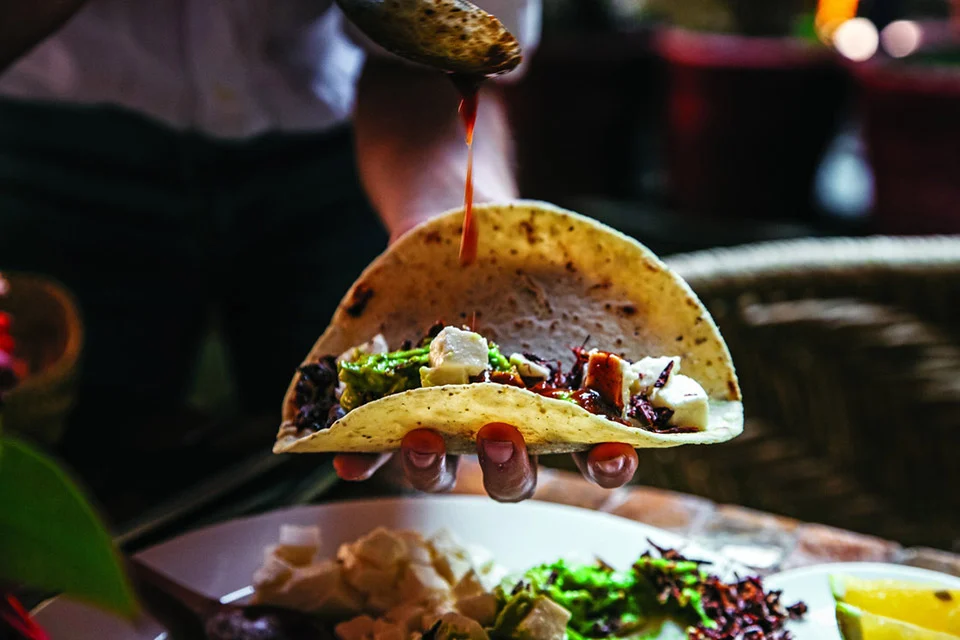

Tacos are thought to come from Mexico, long before the Spanish arrived. Ancient Mexicans used freshly made, soft, flat corn tortillas and gave them with fillings like fish and cooked organs. It was a staple meal that provided vital nutrients and energy to those who consumed it.
If I was to choose the many different kinds of tacos I would need to dedicate this whole website to the many wonderful versions and complexities of tacos. Let's start with the one of a kind...

The history of Birria originates when Goats were first brought from Spain to Mexico. Spaniards allowed the Natives to consume goat meat believing that it was a tough meat. Regional Natives were not frightened by this “birria” and used ancient cooking techniques to marinate and tenderize the meat.